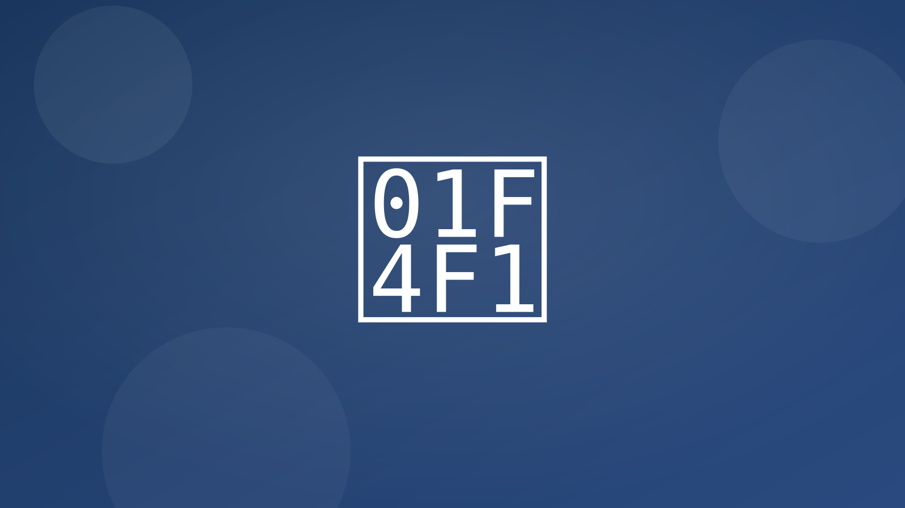

Un solo hilo por cliente/asunto: estado, documentos y dudas.
- Pings de estado al cliente Actualizaciones periódicas del "estado del asunto"; alertas de nuevos documentos; solicitud de firma-e; todo registrado en el expediente.
- Bot FAQ para clientes Responde sobre honorarios, plazos, documentos necesarios; deriva casos especiales a la persona responsable.
- Solicitud de reseña al cierre del caso Enruta feedback negativo internamente para mejora, y publica las reseñas positivas (con consentimiento).
Integraciones típicas
- WhatsApp/Email
- CRM/Expedientes
- Firma electrónica